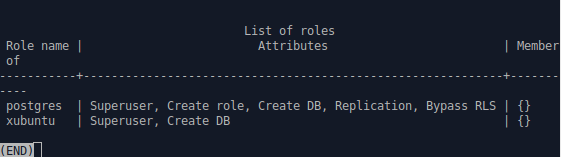
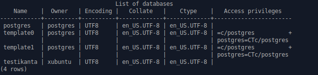
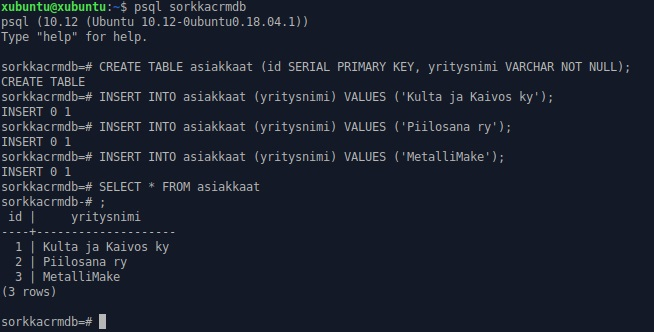
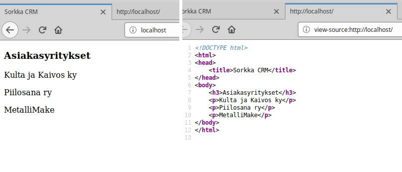
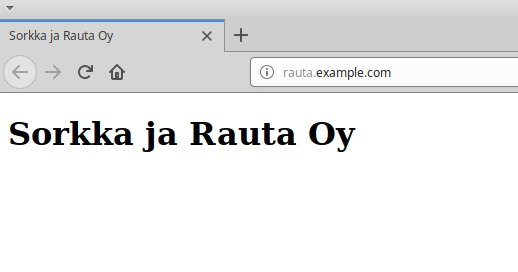

Tietokanta webissä
17.03.2020, Kristian KoponenTehtävänanto
Linux-palvelimet h7
Ratkaise valitsemasi vanha arvioitava laboratorioharjoitus tältä kurssilta. Linkki valittuun tehtävään.
Käytetyt laitteet
Lenovo ThinkPad X220
| Prosessori: | Intel(R) Core(TM) i5-2540M @ 2.60Ghz |
|---|---|
| Keskusmuisti: | 4GiB 1333Mhz DDR3 |
| Näytönohjain: | Intel HD Graphics 3000 |
| Käyttöjärjestelmä: | Windows 10 64-bit |
SanDisk Ultra USB 3.0 32 GB
xubuntu 18.04.3 amd64 -liveAsenna LAMP
Asenna LAMP (Linux, Apache, MySQL, PHP) ja testaa sen toiminta.
Käytän harjoituksessa live-tikkua, joten en tule asentamaan Linuxia koneelleni.
Apachen asennus ja testaus
Päivitetään ohjelmistopaketit ja asennetaan Apache2
$ sudo apt-get update && sudo apt-get install apache2 -y
Korvataan Apachen oletussivun sisältö ja katsotaan localhostista toimiiko Apache
$ echo "Apache toimii"|sudo tee /var/www/html/index.html
$ sudo apt-get install curl -y
$ curl localhost
Apache toimii
MySQL asennus ja testaus
PostgreSQL on tutumpi joten käytän sitä. Asennetaan
$ sudo apt-get install postgresql -y
Kirjaudutaan postgresin oletuskäyttäjänä sisään ja mennään postgres käyttöympäristöön.
$ sudo su postgres
$ psql
Luodaan uusi postgres käyttäjä.
CREATE ROLE xubuntu WITH LOGIN SUPERUSER CREATEDB ENCRYPTED PASSWORD '**********';
Tarkastetaan käyttäjälista
\du
{kind=link}
Vaihdetaan takaisin omaan käyttäjään ja luodaan testikanta.
$ su xubuntu
$ createdb testikanta
$ psql testikanta
Katsotaan tietokannat.
\l
{kind=link}
Syötetään testikantaan uusi taulu testausmielessä ja tulostetaan.
CREATE TABLE koirat (id SERIAL PRIMARY KEY, nimi VARCHAR NOT NULL, rotu VARCHAR NOT NULL);
INSERT INTO koirat (nimi, rotu) VALUES ('Beethoven', 'Bernhardilainen');
INSERT INTO koirat (nimi, rotu) VALUES ('Vili', 'Schipperke');
SELECT * FROM koirat;
{kind=link}
PostgreSQL toimii oletetusti.
PHP:n asennus ja testaus
Asennetaan PHP, sekä apache-moduuli.
$ sudo apt-get install php libapache2-mod-php
Luodaan käyttäjän kotihakemistoon kansio, johon luodaan php-testitiedosto.
$ mkdir testaus
$ nano testaus/index.php
<?php
Print "Hello, PHP!";
?>
Luodaan Apachelle tarvittavat konfiguraatiotiedostot ja otetaan käyttöön.
$ sudoedit /etc/apache2/sites-available/testaus.conf
<VirtualHost *:80>
ServerName testaus.example.com
DocumentRoot /home/xubuntu/testaus
<Directory /home/xubuntu/testaus>
Require all granted
</Directory>
</VirtualHost>
$ sudo a2ensite testaus.conf
$ sudo a2dissite 000-default.conf
$ sudo apachectl configtest
$ sudo systemctl restart apache2
Katsotaan localhost
$ curl localhost
Hello, PHP!
PHP toimii.
Kuormitusta
Kerää kuormitustietoja koneelta koko harjoituksen ajalta. Analysoi tiedot tiiviisti aivan harjoituksen lopuksi.
Asennetaan Munin-niminen monitorointityökalu.
$ sudo apt-get install munin munin-node -y
Hetken kuluttua Munin alkaa näyttämään suoritustietoja, jotka se esittää kätevästi html tiedoistossa. Nämä sijaitsevat /var/cache/munin/www/ -kansiossa. Voidaan selata niitä Firefoxilla.
$ firefox /var/cache/munin/www/index.html
Testataan Muninin toimintaa. Ladataan kuormitustyökalu.
$ sudo apt-get install stress -y
Katsotaan kuormitustyökalun manuaalia.
$ man stress
Käytetään sieltä löytyvää esimerkki-komentoa.
$ stress --cpu 8 --io 4 --vm 2 --vm-bytes 128M --timeout 30s
stress: info: [11614] dispatching hogs: 8 cpu, 4 io, 2vm, 0 hdd
stress: info: [11614] succesful run completed in 30s
Munin-graafeissa näkyy piikki tämän 30 sekunnin ajalta. Toimii. Jätetään Munin-pyörimään taustalle.
Sorkka ja Rauta CRM
Tarvitsemme asiakastietokannan. Tee tietokanta, jossa on seuraavat asiakkaat:
- Kulta ja Kaivos ky
- Piilosana ry
- MetalliMake
Tee PHP-ohjelma, joka lukee nämä tietueet. Laita tämä sivu näkyviin osoitteessa
http://sorkkacrm.example.com
Voit simuloida nimipalvelun toimintaa hosts-tiedoston avulla. Tässä harjoituksessa sivulle
pääsyä ei tarvitse rajoittaa salasanalla, vaan sen tule näkyä kaikkialle nettiin.
Tietokanta
Luodaan tietokanta "sorkkacrmdb".
$ createdb sorkkacrmdb
Avataan tietokanta "sorkkacrmdb"
$ psql sorkkacrmdb
Syötetään halutut tiedot uuteen tauluun nimeltä "asiakkaat".
CREATE TABLE asiakkaat (id SERIAL PRIMARY KEY, yritysnimi VARCHAR NOT NULL);
INSERT INTO asiakkaat (yritysnimi) VALUES ('Kulta ja Kaivos ky');
INSERT INTO asiakkaat (yritysnimi) VALUES ('Piilosana ry');
INSERT INTO asiakkaat (yritysnimi) VALUES ('MetalliMake');
Katsotaan että halutut tiedot ovat taulussa.
SELECT * FROM asiakkaat;
{kind=link}
PHP-ohjelma
Aloitetaan konfiguraatio-tiedoston luomisesta.
$ sudoedit /etc/apache2/sites-available/sorkkacrm.conf
<VirtualHost *:80>
ServerName sorkkacrm.example.com
DocumentRoot /home/sorkkacrm/sorkkacrm
<Directory /home/sorkkacrm/sorkkacrm>
Require all granted
</Directory>
</VirtualHost>
Otetaan juuri luotu konfiguraatio käyttöön ja poistetaan oletuskonfiguraatio pois käytöstä.
$ sudo a2ensite sorkkacrm.conf
$ sudo a2dissite 000-default.conf
$ sudo apachectl configtest
$ sudo systemctl restart apache2
Testataan localhostista sivun kunto
Luodaan uusi käyttäjä ohjelmalle ja lukitaan sille kirjautuminen.
$ sudo adduser sorkkacrm
$ sudo usermod --lock sorkkacrm
Lisätään oma käyttäjä sorkkacrm:n ryhmään.
$ sudo adduser xubuntu sorkkacrm
Kirjaudutaan ulos ja takaisin, jotta ryhmä tulee omalle käyttäjälle aktiiviseksi.
Luodaan kansio Sorkka CRM -ohjelmalle.
$ sudo mkdir /home/sorkkacrm/sorkkacrm
Nyt kansio on luotu root-käyttäjänä. Vaihdetaan oikeudet kaikille sorkkacrm -ryhmään kuuluville.
$ sudo chown sorkkacrm:sorkkacrm /home/sorkkacrm/sorkkacrm
$ sudo chmod g=rwxs /home/sorkkacrm/sorkkacrm
Luodaan kansioon PHP-tiedosto.
$ nano home/sorkkacrm/sorkkacrm/index.php
<!DOCTYPE html>
<html>
<head>
<title>Sorkka CRM</title>
</head>
<body>
<h3>Asiakasyritykset</h3>
<?php
$connStr = "host=localhost dbname=sorkkacrmdb user=xubuntu password=**********";
$conn = pg_connect($connStr);
if (!$conn) {
echo "Error: Yhteys epäonnistui.\n";
exit;
}
$rs = pg_query($conn, "SELECT * FROM asiakkaat");
if (!$rs) {
echo "Error: Tyhjä tulos.\n";
exit;
}
while ($row = pg_fetch_row($rs)) {
echo "\t<p>$row[1]</p>\n";
}
?>
</body>
</html>
Avataan localhost joko Firefoxilla tai
$ curl localhost
Mitään ei tapahtunut. Tarkastetaan Apachen virheloki.
$ tail -1 /var/log/apache2/error.log
[Tue Mar 17 20:42:22.557841 2020] [php7:error] [pid 16355] [client 127.0.0.1:49088] PHP Fatal error: Uncaught Error: Call to undefined function pg_connect() in /home/sorkkacrm/sorkkacrm/index.php ...
Etsin DuckDuckGo:sta kyseisellä virheilmoituksella ja selvisi että puuttuu PostgreSQL:n PHP-moduuli.
sudo apt-get install php-pgsql -y
Kokeillaan uudestaan.
{kind=link}
Sorkka CRM -ohjelma toimii nyt vaaditusti.
Simuloidaan vielä nimipalvelun toimintaa lisäämällä osoite hosts-tiedostoon.
$ sudoedit /etc/hosts
127.0.0.1 localhost
127.0.0.1 xubuntu
127.0.0.1 sorkkacrm.example.com
...
Nyt sivulle pääsee myös sorkkacrm.example.com nimellä.
Rosvoja porteilla
Onko koneellemme yritetty murtautua? Etsi omalta paikalliselta koneeltasi todisteet tapauksesta, jossa koneellesi on yritetty murtatua. Analysoi tiiviisti tähän liittyvät tiedot.
Oletettavasti paikalliselle koneelleni ei ole kukaan yrittänyt murtautua. Vanhassa laboratoriokoneessa opettaja on todennäköisesti pyrkinyt murtautumaan.
Voidaan kuitenkin tarkastaa
$ cat /var/log/auth.log|grep "authentication failure"
Tyhjää näyttää. Kyseisessä tiedostossa näkyy vain omia sudottelujani ja käyttäjien vaihtamista.
Sorkan sivut
Tee staattinen HTML5 weppisivu, jonka otsikkona (molemmat title ja h1) on "Sorkka ja Rauta Oy". Laita sivu näkyviin osoitteeseen http://rauta.example.com/ . Voit simuloida nimipalvelun toimintaa hosts-tiedoston avulla.
Luodaan Apachen konfiguraatiotiedosto
$ sudoedit /etc/apache/sites-available/rauta.conf
<VirtualHost *:80>
ServerName sorkkacrm.example.com
DocumentRoot /home/sorkkacrm/sorkkacrm
<Directory /home/sorkkacrm/sorkkacrm>
Require all granted
</Directory>
</VirtualHost>
Otetaan kyseinen konfiguraatio käyttöön ja käynnistetään apache uudelleen.
$ sudo a2ensite rauta.conf
$ sudo apachectl configtest
$ sudo systemctl restart apache2
Simuloidaan nimipalvelua hosts-tiedostossa.
$ sudoedit /etc/hosts
127.0.0.1 localhost
127.0.0.1 xubuntu
127.0.0.1 sorkkacrm.example.com
127.0.0.1 rauta.example.com
...
Luodaan kansio ja index.html
$ mkdir /home/xubuntu/rauta
$ nano /home/xubuntu/rauta/index.html
<!DOCTYPE html>
<html>
<head>
<title>Sorkka ja Rauta Oy</title>
</head>
<body>
<h1>Sorkka ja Rauta Oy</h1>
</body>
</html>
Avataan sivu
$ firefox rauta.example.com
{kind=link}
Sivu tulee näkyviin ja kaikki toimii.
Einarin esimerkki
Einari Vähä-aho ryhtyy koodaamaan. Tee einarille käyttäjä 'einari'.
Tee einarille esimerkkikotisivu PHP:lla ja laita se näkymään osoitteessa http://localhost/~einari/ .
Esimerkkisivun pitää tulostaa "Einari" käyttäen PHP:n print-funktiota.
Luodaan Einarille käyttäjä ja vaihdetaan einarin käyttäjään.
$ sudo adduser einari
$ su einari
Tehdään Einarin kotihakemistoon kansio käyttäjäsivuja varten.
$ cd
$ mkdir public_html
Luodaan yksinkertainen PHP-tiedosto.
$ nano index.php
<?php
print("Hello Einari");
?>
Siirrytään takaisin pääkäyttäjäksi ja laitetaan User Directoryt toimimaan.
$ su xubuntu
$ sudo a2enmod userdir
$ sudo systemctl restart apache2
Ei toimi vielä. Apache2 on oletusarvoisesti estänyt PHP-koodit käyttäjähakemistoissa. Kommentoidaan Apachen konfiguraatioista tämän estävä kohta pois. Hyvien tapojen mukaisesti kommentoidaan myös kuka tätä on muuttanut.
$ sudoedit /etc/apache2/mods-available/php7.2.conf
### xubuntu-käyttäjä otti tämän pois käytöstä - 17.03.2020
#<IfModule mod_userdir.c>
# <Directory /home/*/public_html>
# php_admin_flag engine Off
# </Directory>
#</IfModule>
Käynnistetään apache uudelleen ja kokeillaan.
$ sudo systemctl restart apache2
$ curl localhost/~einari/
Hello Einari
Einari voi nyt koodailla PHP:lla.
Lähteet
http://terokarvinen.com/2020/linux-palvelimet-2020-alkukevat-kurssi-ict4tn021-3010/#h7
http://www.yolinux.com/TUTORIALS/LinuxTutorialPostgreSQL.html
http://terokarvinen.com/2016/read-mysql-database-with-php-php-pdo
https://www.php.net/manual/en/function.pg-connect.php
https://www.php.net/manual/en/function.pg-query.php
https://medium.com/@Riverside/how-to-install-apache-php-postgresql-lapp-on-ubuntu-16-04-adb00042c45d
http://www.techytalk.info/enable-userdir-apache-module-ubuntu-debian-based-linux-distributions/